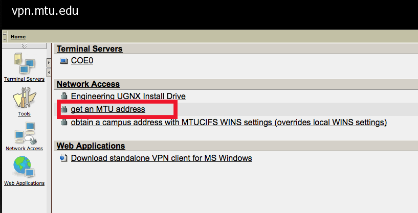
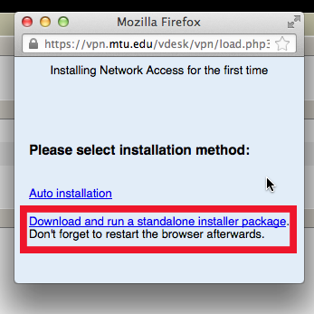
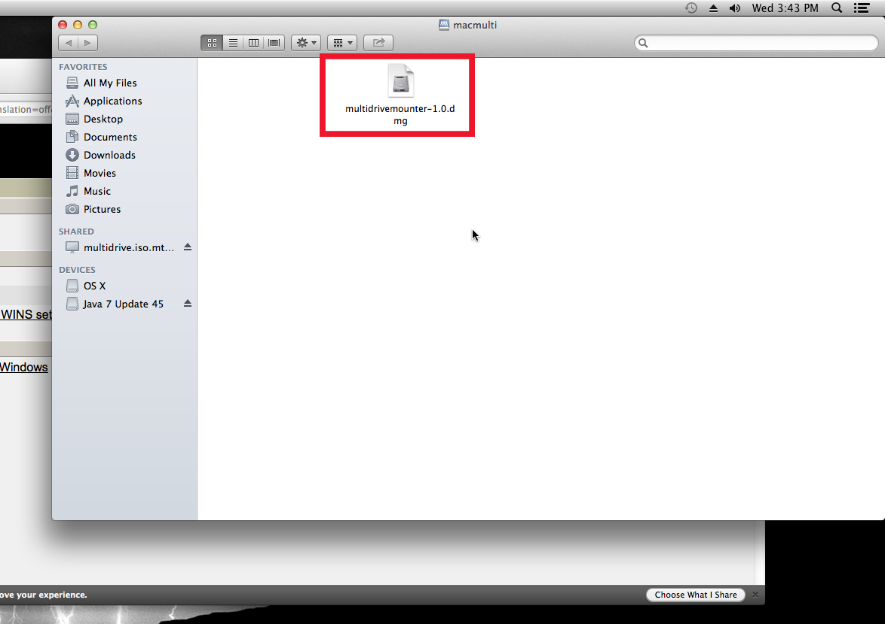

A PDF copy of the instructions can be downloaded here for your convenience.
Step 1 - Setting Up Software
- Open either Safari or Firefox
- Go to
vpn.mtu.edu

- Enter your Michigan Tech ISO username and password

- Click "Get an MTU address"
 - A Window will appear that will say: "Installing Network Access for the first time"
 - Download the standalone installer
- Go to Download folder, and open the file. This will Extract a file called "mac_sslvpn.pkg". Click the new file

- Installer will open. Install the package.


- Quit your webrowser completely. Press Command(⌘)-Q.
Step 2 - Connecting to Michigan Tech
- Open either Safari or Firefox
- Go to vpn.mtu.edu
- Enter your Michigan Tech ISO username and password
- Click "Get an MTU address
- This will open a small window like last time, however this time the window connect to Michigan Tech
- Wait until the status says "Connected"
- Leave that window open; if you close it, you will lose your connect to the Michigan Tech Network. Minimizing the window will not affect the connection, you just cannot close out the window.
Step 3 - Connecting to the Home Drive
- Open Finder
-
On the top bar, click "Go", then "Connect to Server"
- This can be done by pressing ⌘-K
-
In the Server Address field, type: "smb://multidrive.iso.mtu.edu"
- Type in your Michigan Tech Username and Password
- Your Username should be preceded by "MTU\"
- A Window will apper asking you what volume to mount, selct "macmulti"
 -
After that is mounted, you should see a window with a icon called "multidrivemounter-1.dmg". Click the icon.

-
Another window will open containing a README and a Package called "Multidrive Mounter." Drag the Package to your desktop. Click on it.

- You will be prompted for your MTU Username. This will NOT contain the "MTU\"
-
A Window will pop up, this will contain various drive names, select mtucifs_home and press OK.

- You are now connected to your home drive. Use Finder to navigate to your drive
Connecting to the Home Drive afterwords
- Connect to the Michigan Tech Network following the steps from step 2.
- Use the Multidrive Mounter to connect to mtucifs_home. This time it will ask you for your password. You can select for your computer to remember your password.
- You are now connected to your home drive. Use Finder to navigate to your drive